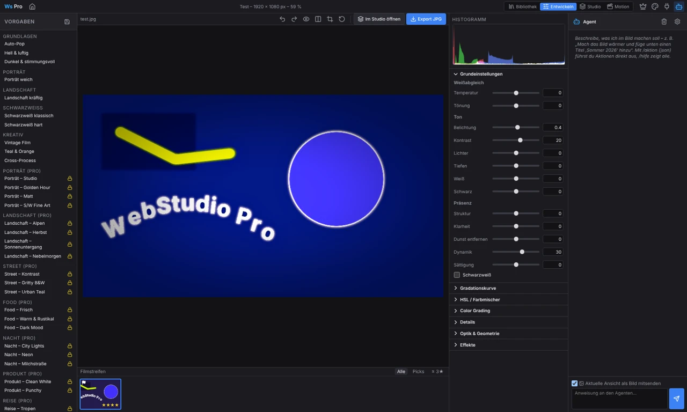

Photo
PhotoFind the look for your photo.
Preview 55 looks on your photo. Adjust their intensity and add one of 53 effects.

StudioBuild with layers.
Combine type, shapes and images. Use masks and 27 blend modes to control how layers interact.
 Motion
MotionSet your idea in motion.
Keyframe position and scale. Shape the timing in the graph editor, then export a WebM or PNG sequence.
 Develop
DevelopFine-tune light and colour.
Adjust white balance, curves and individual hues. Virtual copies keep multiple edits of one photo in your catalogue.
App views from version 0.4.